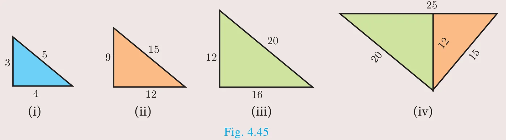
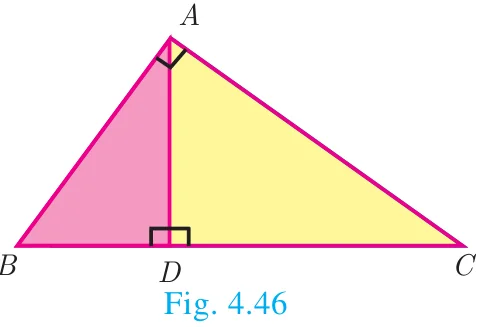
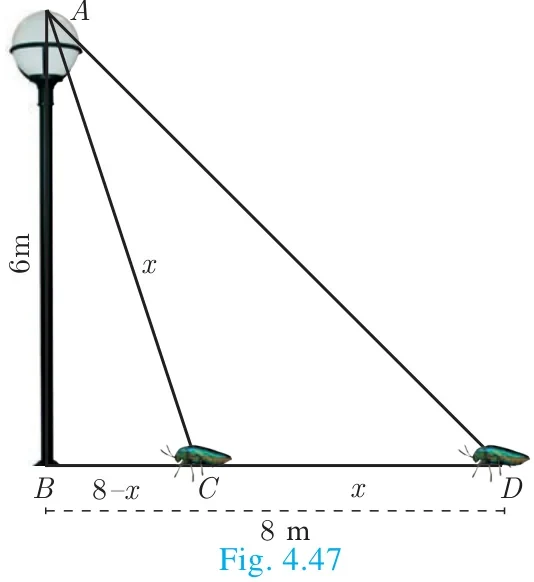
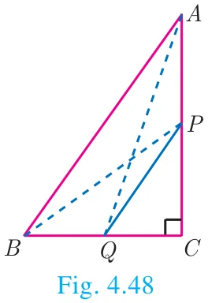
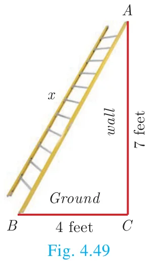
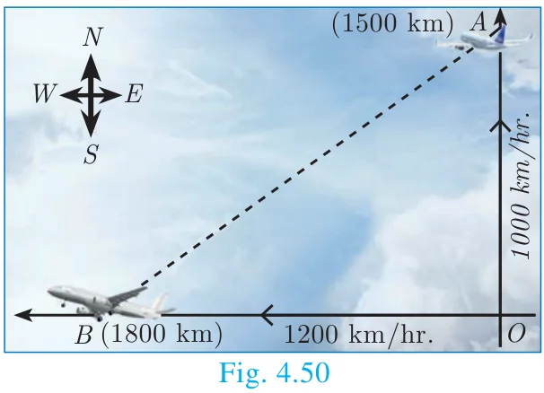

Among all existing theorems in mathematics, Pythagoras theorem is considered to be the most important because it has maximum number of proofs. There are more than 350 ways of proving Pythagoras theorem through different methods. Each of these proofs was discovered by eminent mathematicians, scholars, engineers and math enthusiasts, including one by the 20th American president James Garfield. The book titled “The Pythagorean Proposition” written by Elisha Scott Loomis, published by the National Council of Teaching of Mathematics (NCTM) in America contains 367 proofs of Pythagoras Theorem.
Three numbers \((a, b, c)\) are said to form Pythagorean Triplet, if they form sides of a right triangle. Thus \((a, b, c)\) is a Pythagorean Triplet if and only if \(c^2 = a^2 + b^2\).
Now we are in a position to study this most famous and important theorem not only in Geometry but in whole of mathematics.
Activity 4

Step 1: Take a chart paper, cut out a right angled triangle of measurement as given in triangle (i).
Step 2: Take three more different colour chart papers and cut out three triangles such that the sides of triangle (ii) is three times of the triangle (i), the sides of triangle (iii) is four times of the triangle (i), the sides of triangle (iv) is five times of triangle (i).
Step 3: Now keeping the common side length 12 place the triangle (ii) and (iii) over the triangle (iv) such that the sides of these two triangles [(ii) and (iii)] coincide with the triangle (iv).
Observe the hypotenuse side and write down the equation. What do you conclude?
Note
- In a right angled triangle, the side opposite to \(90^\circ\) (the right angle) is called the hypotenuse.
- The other two sides are called legs of the right angled triangle.
- The hypotenuse will be the longest side of the triangle.
Theorem 5 : Pythagoras Theorem
Statement

In a right angle triangle, the square on the hypotenuse is equal to the sum of the squares on the other two sides.
Proof
Given : In \(\Delta ABC\), \(\angle A = 90^\circ\)
To prove : \(AB^2 + AC^2 = BC^2\)
Construction : Draw \(AD \perp BC\)
| No. | Statement | Reason |
|---|---|---|
| 1. | Compare \(\Delta ABC\) and \(\Delta DBA\) \(\angle B\) is common \(\angle BAC = \angle BDA = 90^\circ\) | Given \(\angle BAC = 90^\circ\) and by construction \(\angle BDA = 90^\circ\) |
| Therefore, \(\Delta ABC \sim \Delta DBA\) \(\dfrac{AB}{BD} = \dfrac{BC}{AB}\) \(AB^2 = BC \times BD\) ... (1) | By AA similarity | |
| 2. | Compare \(\Delta ABC\) and \(\Delta DAC\) \(\angle C\) is common \(\angle BAC = \angle ADC = 90^\circ\) | Given \(\angle BAC = 90^\circ\) and by construction \(\angle ADC = 90^\circ\) |
| Therefore, \(\Delta ABC \sim \Delta DAC\) \(\dfrac{BC}{AC} = \dfrac{AC}{DC}\) \(AC^2 = BC \times DC\) ...(2) | By AA similarity |
Adding (1) and (2) we get
\(AB^2 + AC^2 = BC \times BD + BC \times DC\)
\(= BC(BD + DC) = BC \times BC\)
\(AB^2 + AC^2 = BC^2\).
Hence the theorem is proved.
Do you know?
In India, Pythagoras Theorem is also referred as “Baudhayana Theorem”.
Thinking Corner
- Write down any five Pythagorean triplets?
- In a right angle triangle the sum of other two angles is \(\underline{\qquad}\).
Converse of Pythagoras Theorem
Statement
If the square of the longest side of a triangle is equal to sums of squares of other two sides, then the triangle is a right angle triangle.
Activity 5
- Take two consecutive odd numbers.
- Write the reciprocals of the above numbers and add them. You will get a number of the form \(\dfrac{p}{q}\).
- Add 2 to the denominator of \(\dfrac{p}{q}\) to get \(q + 2\).
- Now consider the numbers \(p,\ q,\ q + 2\). What relation you get between these three numbers?
Try for three pairs of consecutive odd numbers and conclude your answer.
Thinking Corner
Can all the three sides of a right angled triangle be odd numbers? Why?
Example 4.20
An insect 8 m away initially from the foot of a lamp post which is 6 m tall, crawls towards it moving through a distance. If its distance from the top of the lamp post is equal to the distance it has moved, how far is the insect away from the foot of the lamp post?

Solution
Distance between the insect and the foot of the lamp post \(BD = 8\) m
The height of the lamp post, \(AB = 6\) m
After moving a distance of \(x\) m, let the insect be at \(C\)
Let, \(AC = CD = x\). Then \(BC = BD - CD = 8 - x\)
In \(\Delta ABC\), \(\angle B = 90^\circ\)
\(AC^2 = AB^2 + BC^2\) gives \(x^2 = 6^2 + (8 - x)^2\)
\(x^2 = 36 + 64 - 16x + x^2\)
\(16x = 100\) then \(x = 6.25\)
Then, \(BC = 8 - x = 8 - 6.25 = 1.75\) m
Therefore the insect is 1.75 m away from the foot of the lamp post.
Example 4.21
\(P\) and \(Q\) are the mid-points of the sides \(CA\) and \(CB\) respectively of a \(\Delta ABC\), right angled at \(C\). Prove that \(4(AQ^2 + BP^2) = 5AB^2\).

Solution
\(\Delta AQC\) is a right triangle at C, \(AQ^2 = AC^2 + QC^2\) ... (1)
\(\Delta BPC\) is a right triangle at C, \(BP^2 = BC^2 + CP^2\) ... (2)
\(\Delta ABC\) is a right triangle at C, \(AB^2 = AC^2 + BC^2\) ... (3)
From (1) and (2), \(AQ^2 + BP^2 = AC^2 + QC^2 + BC^2 + CP^2\)
\(4(AQ^2 + BP^2) = 4AC^2 + 4QC^2 + 4BC^2 + 4CP^2\)
\(= 4AC^2 + (2QC)^2 + 4BC^2 + (2CP)^2\)
\(= 4AC^2 + BC^2 + 4BC^2 + AC^2\) (Since \(P\) and \(Q\) are mid points)
\(= 5(AC^2 + BC^2)\) (From equation (3))
\(4(AQ^2 + BP^2) = 5AB^2\)
Example 4.22
What length of ladder is needed to reach a height of 7 ft along the wall when the base of the ladder is 4 ft from the wall? Round off your answer to the next tenth place.

Solution
Let \(x\) be the length of the ladder. \(BC = 4\) ft, \(AC = 7\) ft.
By Pythagoras theorem we have, \(AB^2 = AC^2 + BC^2\)
\(x^2 = 7^2 + 4^2 \Rightarrow x^2 = 49 + 16\)
\(x^2 = 65\). Hence, \(x = \sqrt{65}\)
The number \(\sqrt{65}\) is between 8 and 8.1.
\(8^2 = 64 < 65 < 65.61 = 8.1^2\)
Therefore, the length of the ladder is approximately 8.1 ft.
Example 4.23
An Aeroplane after take off from an airport and flies due north at a speed of 1000 km/hr. At the same time, another aeroplane take off from the same airport and flies due west at a speed of 1200 km/hr. How far apart will be the two planes after \(1\frac{1}{2}\) hours?

Solution
Let the first aeroplane starts from \(O\) and goes upto \(A\) towards north, (Distance = Speed \(\times\) time)
where \(OA = \left(1000 \times \dfrac{3}{2}\right)\) km \(= 1500\) km
Let the second aeroplane starts from \(O\) at the same time and goes upto \(B\) towards west,
where \(OB = \left(1200 \times \dfrac{3}{2}\right) = 1800\) km
The required distance to be found is \(BA\).
In right angled triangle \(AOB\), \(AB^2 = OA^2 + OB^2\)
\(AB^2 = (1500)^2 + (1800)^2 = 100^2\,(15^2 + 18^2)\)
\(= 100^2 \times 549 = 100^2 \times 9 \times 61\)
\(AB = 100 \times 3 \times \sqrt{61} = 300\sqrt{61}\) kms.
Progress Check
- \(\underline{\qquad}\) is the longest side of the right angled triangle.
- The first theorem in mathematics is \(\underline{\qquad}\).
- If the square of the longest side of a triangle is equal to sums of squares of other two sides, then the triangle is \(\underline{\qquad}\).
- State True or False. Justify them.
- Pythagoras Theorem is applicable to all triangles.
- One side of a right angled triangle must always be a multiple of 4.